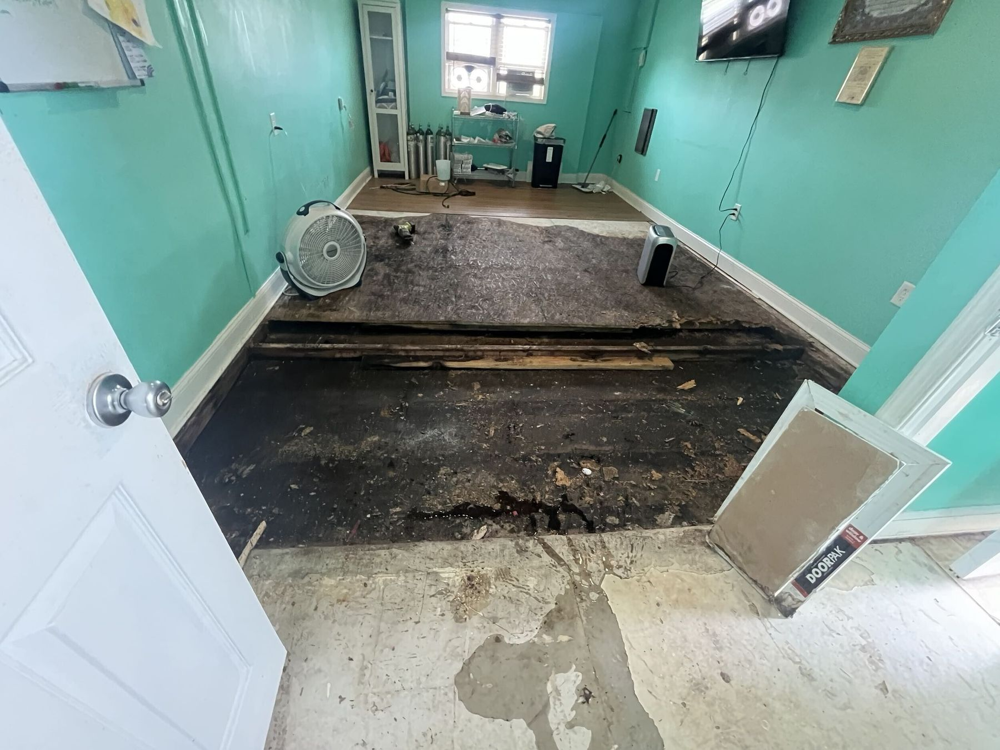

What this actually is
Remediation done properly is a containment job. The affected area is isolated with sheeting, put under negative air pressure with HEPA filtration, and worked in a way that keeps spores out of the rest of the building. Unprotected demolition does the opposite.
Affected porous material comes out. Non-porous surfaces are HEPA vacuumed and treated. Structural timber is cleaned and, where the staining is superficial rather than structural, sealed rather than replaced.
Then the source gets fixed. Every mold job we take on includes finding the water that caused it, and we would rather lose the job than take money for removing growth we know is going to return.
Signs you have this problem
How the work runs
Extent of growth, moisture source, and air or surface sampling where the situation warrants a laboratory result.
Sheeting, sealed openings, negative air with HEPA filtration, and protected routes in and out.
Affected porous material out under containment, non-porous surfaces HEPA vacuumed and treated.
The leak, the drainage, the condensation or the ventilation problem that fed it. This is not optional.
Post-remediation verification, then reconstruction of what was removed.
What is included
Questions people ask
Not always. If you can see it and smell it, you do not need a laboratory to tell you it is there. You need the moisture source found. Testing earns its keep when the growth is hidden, when a health question is involved, or when a transaction or dispute needs a documented result.
'Black mold' is a colour, not a species, and plenty of harmless growth is black. The remediation approach is driven by how much there is, what material it is on, and how wet the building is. Not by the colour.
Because it would come back, and you would be entitled to be angry about it. If you genuinely cannot fund both at once, we will scope the source repair first and stage the remediation.
Related work

Major projectExtraction, structural drying, removal of what cannot be saved, and rebuild. Documented to a standard an insurer will accept.
What we fix Diagnostic
DiagnosticFind the actual source of the water before anyone opens a wall. Thermal imaging, moisture meters and drone survey, inside and out.
What we fix Major project
Major projectStop the air leakage that carries moisture into wall and roof cavities. It is the quiet cause behind a great deal of recurring mold.
What we fixNext step
We will tell you straight away whether this is something we can take on at your address.
Greater Philadelphia · northern Delaware